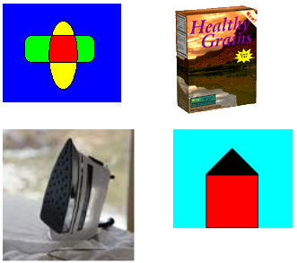

The following example retrieves the individual frames from a multiple-frame TIFF file. When the TIFF file was created, the individual frames were added to the Page dimension (see Creating and Saving a Multiple-Frame Image). The code displays each of the four pages and saves each page to a separate PNG disk file.
The code constructs an Image object from the multiple-frame TIFF file. To retrieve the individual frames (pages), the code calls the Image::SelectActiveFrame method of that Image object. The first argument passed to the Image::SelectActiveFrame method is the address of a GUID that specifies the dimension in which the frames were previously added to the multiple-frame TIFF file. The GUID FrameDimensionPage is defined in Gdiplusimaging.h. Other GUIDs defined in that header file are FrameDimensionTime and FrameDimensionResolution. The second argument passed to the Image::SelectActiveFrame method is the zero-based index of the desired page.
The code relies on the helper function GetEncoderClsid, which is shown in Retrieving the Class Identifier for an Encoder.
GUID pageGuid = FrameDimensionPage;
CLSID encoderClsid;
Image multi(L"Multiframe.tif");
// Get the CLSID of the PNG encoder.
GetEncoderClsid(L"image/png", &encoderClsid);
// Display and save the first page (index 0).
multi.SelectActiveFrame(&pageGuid, 0);
graphics.DrawImage(&multi, 10, 10);
multi.Save(L"Page0.png", &encoderClsid, NULL);
// Display and save the second page.
multi.SelectActiveFrame(&pageGuid, 1);
graphics.DrawImage(&multi, 200, 10);
multi.Save(L"Page1.png", &encoderClsid, NULL);
// Display and save the third page.
multi.SelectActiveFrame(&pageGuid, 2);
graphics.DrawImage(&multi, 10, 150);
multi.Save(L"Page2.png", &encoderClsid, NULL);
// Display and save the fourth page.
multi.SelectActiveFrame(&pageGuid, 3);
graphics.DrawImage(&multi, 200, 150);
multi.Save(L"Page3.png", &encoderClsid, NULL);
The following illustration shows the individual pages as displayed by the preceding code.

Â
Â